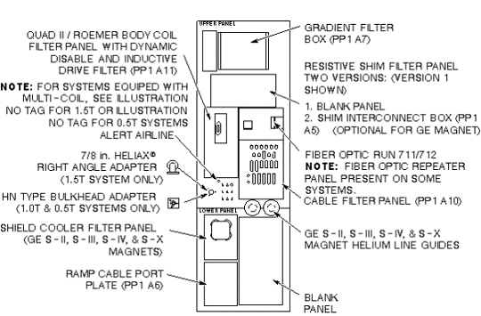

Operating Documentation
Direction 5133315-3, Rev# 14
Signa EXCITE HD 1.5T Service Methods
Module Version 1.0, Version Date 5/3/07
Operating Documentation |
DESCRIPTION: Describes the different version components on the penetration panel and the interconnect run numbers.
Penetration Panel filter panels in Signa Advantage 1.5T upgrade should be upgraded to one single configuration shown in Illustration 1. Systems with 1.5T magnets have a 7/8 in. HELIAX right angle adapter in J44. Systems with 1.0T and 0.5T magnets will have an HN type bulkhead adapter instead.
| NOTE: | Sites with Oxford Magnet’s may have an Ion Pump system connected through the Pen Panel. The Ion Pump consists of two parts, the pump which is on the magnet, and the high voltage supply which is in the scan room. The Ion Pump receives it’s power from facility power. Special care must be taken when servicing the Pen Panel on sites that have Ion Pumps because powering down the PDU will not remove power to the Ion Pump. |
Illustration 1: SIGNA ADVANTAGE 1.5T, 1.0T,&0.5T PENETRATION PANEL
